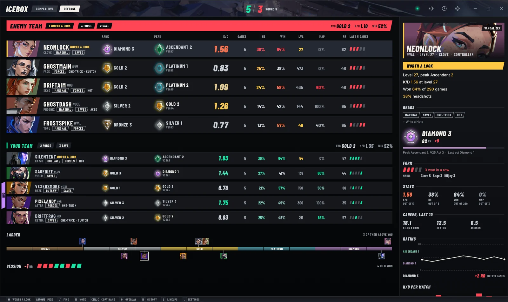
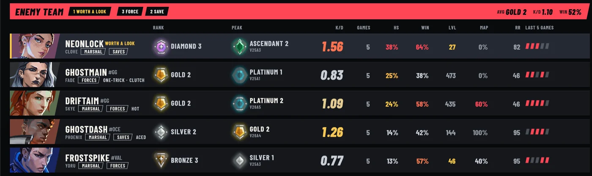
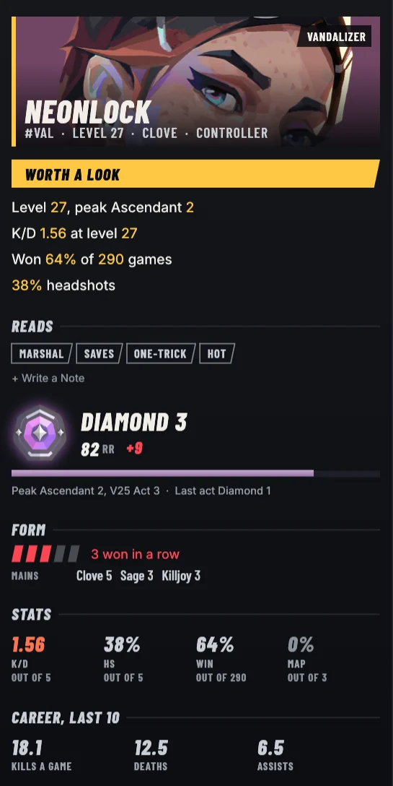
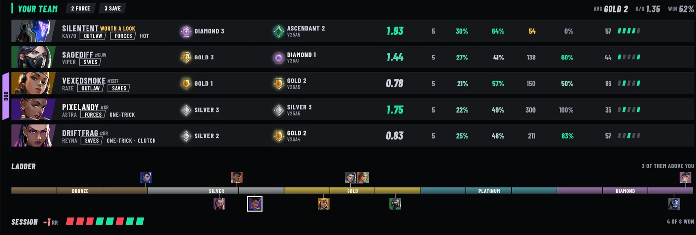
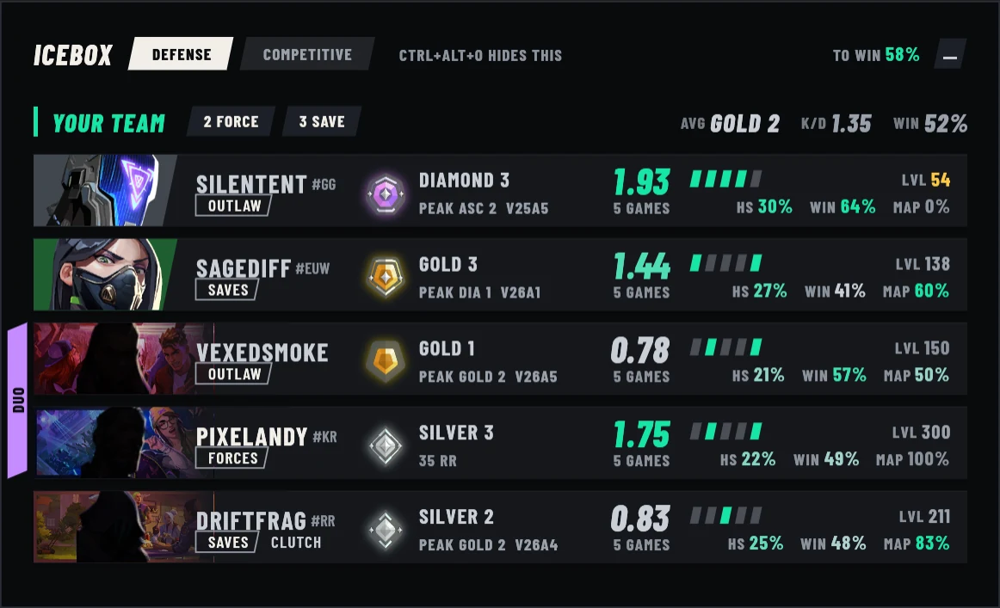
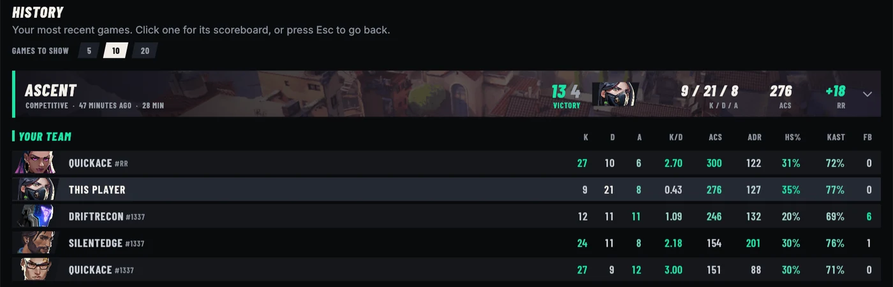
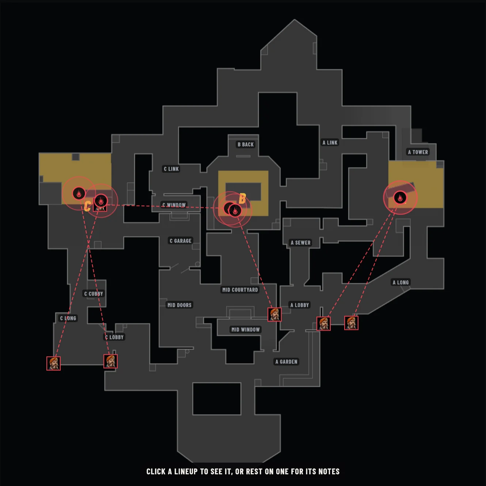
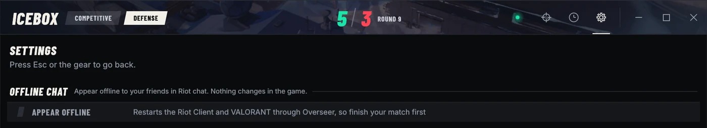

Valorant Overseer
Every player in your VALORANT match, with their rank, peak, K/D and party, before the round starts. Free, and it runs on your PC.
- Version 2.1.0
- Windows 10 and 11
- No Account, No Tracking

Every Player, Ranked
The whole lobby on one board, with each player's rank, peak rank and the act they reached it, K/D, headshot rate, win rate, level, RR and their last five games. The other team sits on top, since they're the five you can't see in game.

Peak, Form and Reads
Rest on a player and the panel opens on their card, their rank with its RR, their form over recent games, the agents they main and a rating line across their last ten.
Reads sum up their habits from those matches. An account that looks like a smurf is flagged Worth a Look, with the reasons beside it.
- Worth a Look
- Saves
- Forces
- One-Trick
- Hot
- Clutch

Who Queued Together
Parties get a tab down the side of their rows, so a duo or a trio reads at a glance. The ladder under the board puts everyone in the lobby at their rank, and your session's RR keeps count of the night.

An Overlay in Agent Select
In agent select a small window sits over the game with your team's ranks, form and parties, and it goes away once the match loads.
It never takes the focus from VALORANT, so the game stays full screen. Ctrl+Alt+O shows or hides it any time, and it can sit in any corner.

Your Match History
Your recent games with the score, your K/D/A, ACS and the RR you won or lost. Open one for the full scoreboard, with ADR, headshot rate, KAST and first bloods for all ten players.

Lineups for Every Map
Drag from where you stand to where it lands, pick the agent and the ability, and add a clip from a YouTube link or a video of your own, trimmed right in the app.
Draw on the map, check a turret's line of sight, and share a map's lineups as a code to paste in chat.

Appear Offline
Hide from your friends in Riot chat without changing anything in the game. Overseer restarts the Riot Client and VALORANT to do it, so finish your match first.

It Runs on Your PC
Overseer reads your match from the Riot Client's own local API, the same one the client uses to show your party, and asks Riot's servers for the recent games of the players in it. Agent and map art comes from valorant-api.com, and nothing about you is sent there.
- Never reads game memory
- Never clicks, types or locks in
- No account or server of its own
- Never updates itself
Download Overseer
Setup installs Overseer into AppData with its own copy of Python, so it needs no admin rights. It also installs yt-dlp and FFmpeg with winget for lineup clips. Running it again repairs or upgrades it and keeps your data, and it uninstalls from Settings, then Apps.
Valorant Overseer 2.1.0, from the latest release on GitHub.
Download Valorant-Overseer-Setup.exe from the latest release.
Open it and pick your region. If Windows says it protected your PC, click More info, then Run anyway.
Open VALORANT and join a lobby. Overseer fills in as soon as there's a match to show.
Questions
Is Valorant Overseer free?
Yes. It's free for anything noncommercial under the PolyForm Strict License 1.0.0. You can't sell it, use it in a business, share copies of it or publish a changed version.
Does it need an account, or send my data anywhere?
No account. Overseer talks to the Riot Client on your PC and to Riot's servers for match data, and fetches agent and map art from valorant-api.com without sending anything about you. It has no server of its own and no tracking.
Does it read VALORANT's memory or play for me?
No. It reads your match from the Riot Client's own local API. It never reads the game's memory, and it never clicks, types or locks in an agent.
Can I get banned for using it?
Overseer never touches the game, but whether third-party tools are allowed is Riot's decision, so it can't promise anything either way.
Does it work on Mac or Linux?
No. It's a Windows app, for Windows 10 and 11.
How do lineup clips work?
Paste a YouTube link or pick a video on your PC, trim it in the app, and Overseer cuts the clip with yt-dlp and FFmpeg, which setup installs with winget.